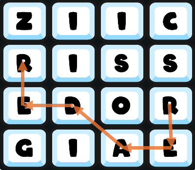

Word Finder vX.X
Create chains of letters to make words

Letters can be chained horizontally, vertically, or diagonally
The same letter tile can only be used once per word
Words are valid if they are at least 3 characters long and in the currently selected
dictionary